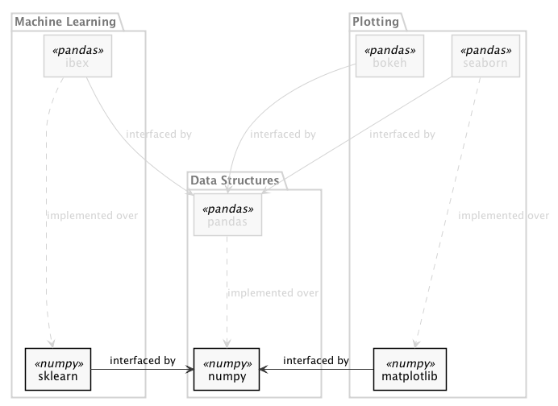

Ibex
Making Scikit-Learn Run On Top Of Pandas
Ami Tavory, Shahar Azulay, Tali Raveh-SadkaOutline
- Motivation
- Example: Concatenate & Manipulate Columns
- Example: Long-To-Pivot + Merge Nonnegative Matrix Factorization
- Example: Nested Feature Union & Pipelining
- Main Points
- User Perspective
- Internals
- Conclusions
Concatenate & Manipulate Columns
from sklearn.decomposition import PCA
from sklearn.pipeline import make_pipeline, make_union
import numpy as np
X = np.c_[X0, X1]
features = make_union(SelectKBest(k=1), PCA(n_components=2))
prd = make_pipeline(
features,
RandomForestRegressor())
prd.fit(X, y).feature_importances_
from sklearn.decomposition import PCA
from sklearn.pipeline import make_pipeline, make_union
import numpy as np
X = np.c_[X0, X1]
features = make_union(SelectKBest(k=1), PCA(n_components=2))
prd = make_pipeline(
features,
RandomForestRegressor())
prd.fit(X, y).feature_importances_
from sklearn.decomposition import PCA
from sklearn.pipeline import make_pipeline, make_union
import numpy as np
X = np.c_[X0, X1]
features = make_union(SelectKBest(k=1), PCA(n_components=2))
prd = make_pipeline(
features,
RandomForestRegressor())
prd.fit(X, y).feature_importances_
from sklearn.decomposition import PCA
from sklearn.pipeline import make_pipeline, make_union
import numpy as np
X = np.c_[X0, X1]
features = make_union(SelectKBest(k=1), PCA(n_components=2))
prd = make_pipeline(
features,
RandomForestRegressor())
prd.fit(X, y).feature_importances_
>>> X0
array([[23.2, 21.8], ..., ..., ..., ])
>>> X1
array([[9, 8, 78], ..., ..., ..., ])
>>> X
array([[21.8, 0.3, 9.8], ..., ..., ..., ])
>>> prd.feature_importances_
array([0.1, 0.3, 0.7])
Results Interpretability
>>> prd.feature_importances_
array([0.1, 0.3, 0.7])
- What do these numbers mean?
- Which original column does the first number represent?
Column Maintenance
Possible Train Scenario
Possible Deployment Scenario
Outline
- Motivation
- Example: Concatenate & Manipulate Columns
- Example: Long-To-Pivot + Merge Nonnegative Matrix Factorization
- Example: Nested Feature Union & Pipelining
- Main Points
- User Perspective
- Internals
- Conclusions
Long-To-Pivot + Merge Nonnegative Matrix Factorization
| User | Movie | Rating |
|---|---|---|
| Roni | Frozen | 5 |
| Roni | Mulan | 4 |
| Yarden | Mulan | 1 |
| Anat | Mulan | 1 |
| Anat | Shrek | 2 |
| Yarden | Shrek | 3 |
| Yarden | Frozen | 5 |
| Anat | Frozen | 5 |
| Roni | Shrek | 5 |

NMF Data Manipulation: Long-To-Pivot + Merge
Original Long Format
| User | Movie | Rating |
|---|---|---|
| Roni | Frozen | 5 |
| Roni | Mulan | 4 |
| Yarden | Mulan | 1 |
| Anat | Mulan | 1 |
| Anat | Shrek | 2 |
| Yarden | Shrek | 3 |
| Yarden | Frozen | 5 |
| Anat | Frozen | 5 |
| Roni | Shrek | 5 |
Pivot
| Frozen | Shrek | Mulan | |
| Roni | 5 | 5 | 4 |
| Yarden | 5 | 3 | 1 |
| Anat | 5 | 2 | 1 |
NMF Decomposition
| User | user_0 | user_1 |
|---|---|---|
| Roni | 0.1 | 1.3 |
| Yarden | 1.1 | 1.4 |
| Anat | 0.2 | 9.8 |
| Movie | movie_0 | movie_1 |
|---|---|---|
| Frozen | 10 | 20 |
| Shrek | 20.1 | 30.4 |
| Mulan | 12 | 13 |
Merge With Long Format
| User | Movie | user_0 | user_1 | movie_0 | movie_1 |
|---|---|---|---|---|---|
| Roni | Frozen | 0.1 | 1.3 | 10 | 20 |
| Roni | Mulan | 0.1 | 1.3 | 12 | 13 |
| Yarden | Mulan | 1.1 | 1.4 | 12 | 13 |
| Anat | Mulan | 0.2 | 9.8 | 12 | 13 |
| Anat | Shrek | 0.2 | 9.8 | 20.1 | 30.4 |
| Yarden | Shrek | 1.1 | 1.4 | 20.1 | 30.4 |
| Yarden | Frozen | 1.1 | 1.4 | 10 | 20 |
| Anat | Frozen | 0.2 | 9.8 | 10 | 20 |
| Roni | Shrek | 0.1 | 1.3 | 20.1 | 30.4 |
Performing The Munging
- How to actually perform the pivots + merge?
- Is this really data?
User Movie Rating Roni Frozen 5 Roni Mulan 4 Yarden Mulan 1 Anat Mulan 1 Anat Shrek 2 Yarden Shrek 3 Yarden Frozen 5 Anat Frozen 5 Roni Shrek 5
Outline
- Motivation
- Example: Concatenate & Manipulate Columns
- Example: Long-To-Pivot + Merge Nonnegative Matrix Factorization
- Example: Nested Feature Union & Pipelining
- Main Points
- User Perspective
- Internals
- Conclusions
Outline
- Motivation
- Example: Concatenate & Manipulate Columns
- Example: Long-To-Pivot + Merge Nonnegative Matrix Factorization
- Example: Nested Feature Union & Pipelining
- Main Points
- User Perspective
- Internals
- Conclusions
1) Use Metadata
| 5.1 | 3.5 | 1.4 | 0.2 |
| 4.9 | 3.0 | 1.4 | 0.2 |
| 4.7 | 3.2 | 1.3 | 0.2 |
| 4.6 | 3.1 | 1.5 | 0.2 |
| 5.0 | 3.6 | 1.4 | 0.2 |
| sepal length (cm) | sepal width (cm) | petal length (cm) | petal width (cm) | |
|---|---|---|---|---|
| 0 | 5.1 | 3.5 | 1.4 | 0.2 |
| 1 | 4.9 | 3.0 | 1.4 | 0.2 |
| 2 | 4.7 | 3.2 | 1.3 | 0.2 |
| 3 | 4.6 | 3.1 | 1.5 | 0.2 |
| 4 | 5.0 | 3.6 | 1.4 | 0.2 |
